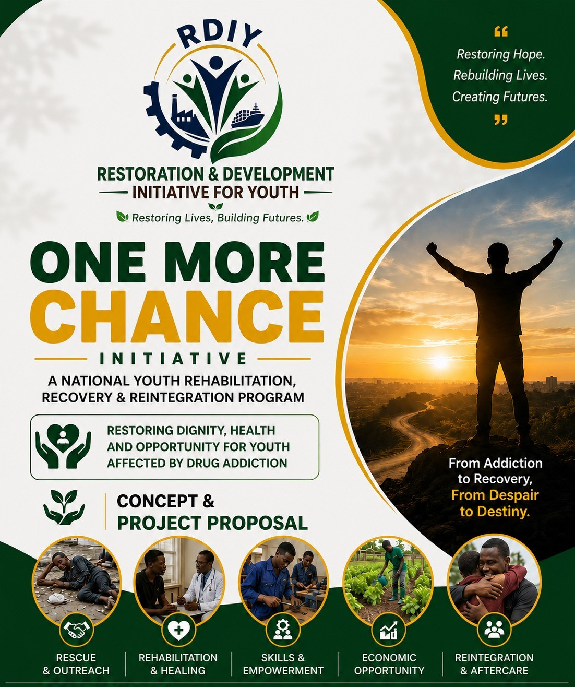
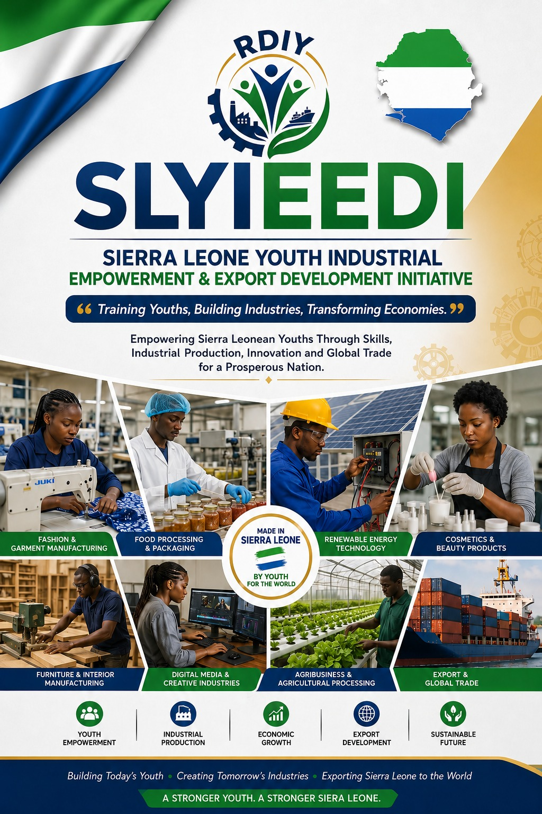
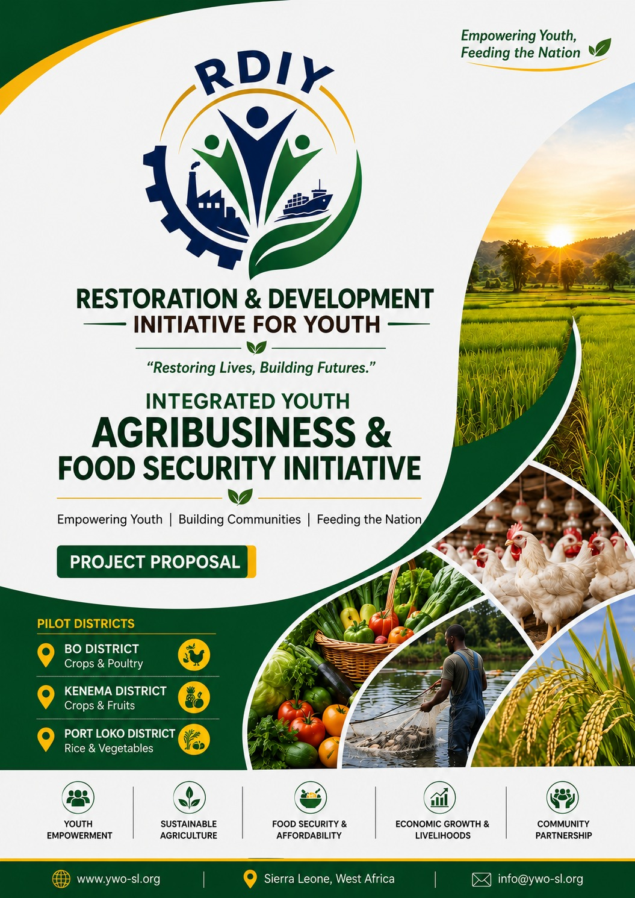

Transforming Communities Through Sustainable Development Projects
RDIY designs and implements practical projects that address youth unemployment, food insecurity, skills gaps, poverty, and social exclusion while creating long-term opportunities for sustainable growth.
Driving Meaningful Change Across Sierra Leone
Our projects are designed to create measurable impact by equipping young people with practical skills, improving livelihoods, strengthening food security, and supporting economic empowerment.

One More Chance Initiative (OMCI)
The One More Chance Initiative is a national youth rehabilitation, recovery, and reintegration program developed by RDIY to support young people affected by substance dependency and severe social exclusion.
The project seeks to restore dignity, health, confidence, and economic opportunities to vulnerable youths by providing rehabilitation services, psychosocial support, vocational training, empowerment opportunities, and long-term reintegration assistance.
Through a holistic approach that combines recovery, skills development, livelihood support, and community engagement, the initiative helps beneficiaries rebuild their lives and become productive members of society.
Project Components
- Rescue & Community Outreach
- Rehabilitation & Healing Services
- Mental Health & Psychosocial Support
- Skills Training & Empowerment
- Economic Opportunity Development
- Reintegration & Aftercare Support
Project Objectives
- Support youths affected by substance abuse
- Reduce drug dependency and social exclusion
- Improve mental health and wellbeing
- Equip beneficiaries with employable skills
- Promote economic independence
- Facilitate successful community reintegration
Expected Outcomes
- Increased recovery and rehabilitation success rates
- Reduced youth involvement in substance abuse
- Improved access to vocational opportunities
- Stronger family and community reintegration
- Enhanced social and economic participation
- Sustainable pathways to self-reliance

Sierra Leone Youth Industrial Empowerment & Export Development Initiative (SLYIEEDI)
This project seeks to equip young people with industrial skills and connect them with production opportunities that can support local trade, exports, and economic growth.
The initiative was developed to address unemployment, skills shortages, and limited economic opportunities affecting young people across Sierra Leone.
Industry Areas
- Food processing and packaging
- Fashion, garment, and accessories manufacturing
- Cosmetics and beauty products
- Furniture and interior manufacturing
- Digital media and creative services
- Agribusiness and agricultural processing
- Export and trade
- Renewable energy installation
Project Goals
- Improve employability
- Promote entrepreneurship
- Reduce youth dependency
- Support sustainable livelihoods
Integrated Youth Agribusiness & Food Security Initiative
This initiative was established to address youth unemployment while supporting food security and local economic growth.
The project supports young people through modern farming techniques, agribusiness development, food processing, and agricultural value chains.
Project Components
- Crop Farming
- Poultry Production
- Fish Farming
- Vegetable Cultivation
- Fruit Farming
- Food Processing & Preservation
- Market access and produce sales
Pilot Districts
- Bo District
- Kenema District
- Port Loko District
Expected Outcomes
- Increase youth employment
- Improve food security
- Strengthen local economies
- Promote sustainable agriculture

Future Development Projects
RDIY continues to develop new initiatives that expand opportunities for vulnerable youths while strengthening communities through sustainable development, innovation, rehabilitation support, entrepreneurship, and agribusiness.
Support Projects That Change Lives
Donate to help RDIY expand opportunities for young people, strengthen communities, and create lasting impact.